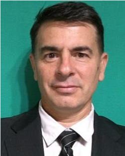

García Guillermo Hector
RESUMEN
Profesional de Administración y Finanzas con amplia experiencia. Sencillo, curioso y participativo, con la idea “siempre hay una forma de hacerlo mejor ” y resistido al “no se puede”. Impulsor de mejoras en los procesos y reestructuración de modelos de negocios. Experiencia en Start Up de empresas Consultor en tema de sistematización de administración, costos y finanzas.
EXPERIENCIA PROFESIONAL RELACIONADA
-
De 02/05/2019 a Actualidad (Bs As/ Argentina)
J.C.C.C SA (Sector Construcción)- Tarea: Coordinador administrativo, financiero y logístico en obra, proyecto con gran dotación de personal. Parque eólico Miramar.
Jefe administrativo en Obra
-
De 15/09/2018 a 28/02/2019 (Mendoza/ Argentina)
Energe SA (Sector Energía)- Tareas: Responsable de la administración, finanzas y contabilidad de la empresa. Elaboración de la planificación financiera. Reportes contables y financieros. Control impositivo, pre liquidación de Sueldos.
Gerente Administrativo Financiero
-
De 1/10/2017 a 28/02/2018 (Mendoza/ Argentina)
Knight Piesold Consultores Argentina SA (Sector Oil)- Tareas: Responsable de Control de gestión, análisis de propuesta, factibilidad de proyectos, control de gastos, informes de gerencia. Supervisión de Compras, logística y Recursos humanos. Supervisión Compras.
Jefe Control de Gestión
-
De 02/01/2016 a 31/8/2017 (Mendoza/ Argentina)
Automotores General San Martín (Sector Automotriz)- Tareas: Responsable de la elaboración de Balances de corte mensual, Control de inventarios, Análisis de costos, análisis de compras. A cargo de la Administración general del Grupo.
Coordinador Administrativo Financiero
-
De 01/12/2014 a 30/11/2015 (Mendoza/ Argentina)
Danilo de Pellegrini SA (Sector Construcción)- Tareas: Responsable de Área Financiera y contable, negociación de certificados de obras en bancos, control financiero, cash flow, negociación con organismos públicos, control liquidación de haberes, control de ejecución presupuestaria. Control de documentación para licitaciones.
Gerente Administrativo
-
De 01/01/2012 a 30/11/2014 (Mendoza/ Argentina)
J.C.C.C SA (Sector Construcción)- Tarea: Coordinador administrativo, financiero y logístico en obra, proyectos con gran dotación de personal. OBRA YPF Luján, Mendoza, YPF La Plata. Supervisión y carga documentación Equipos y personal en SRC YPF. Ruta 40 y Ruta 60, MZA
Jefe administrativo en Obra
-
De 01/07/1999 a 30/09/2006 (Mendoza/ Argentina)
Ente Provincial Regulador Eléctrico (Sector Energía)- Tareas: Diseño de Presupuesto anual. Control de Costos y Flujo de Fondos, Confección de Balances mensuales e informes de gestión. Liquidación de sueldos y jornales, Administración de personal y Tesorería.
Jefe de Administración y Finanzas
REFERENCIAS
- Marcelo VICENTELA
ENERGE | Director Com.
Teléfono 2616001244
E-mail marcelovicentela2015@gmail.com
- Martín LARA
Autotransportes Buttini | Contador
Teléfono 2604513582
E-mail cdormlara@yahoo.com.ar
- Javier Mancifesta
Ente Provincial Regulador E.|
Teléfono 2615329069
E-mail jmancifesta@epremendoza.gov.ar
- Laura Villegas
ECUO SOFT /Gerente Com.
Teléfono 2615005780
E-mail: lvillegas@ecuosoft.com
ESTUDIOS
Año 2001: Especialización en Costos y Gestión Estratégica
Universidad Nacional de Cuyo - Mendoza - Argentina
Año 1998: Contador Público Mat. 5105 CPCE Mendoza
Universidad Champagnat – Mendoza - Argentina
Año 1989: Técnico Mecánico electricista
Consejo Nacional de Educación técnica – Mendoza- Argentina
CONOCIMIENTOS
-
PAQUETE OFFICE
-
TODAS LAS HERRAMIENTAS – Nivel: AVANZADO
-
SOFTWARE GESTIÓN
-
TANGO, BEJERMAN Y TIEMPO – Nivel: AVANZADO
-
ERP
-
GBP, ODOO, PLATAFORMA, JDE, QUITER – Nivel: IMPLEMENTADOR
DATOS PERSONALES
- CUIT: 20-22093037-9
- Fecha de nacimiento:
- 10 de Febrero de 1971
- Estado civil: Casado
- Dirección:
- Santa Rosa 2240, Guaymallén, Mendoza
DATOS DE CONTACTO
- Celular: (261) 570 2371
- Linkedin:guillermo-garcía-cdor/
- guillermohectorgarcia @outlook.com
- Idiomas:
- Español: Natal
- Inglés: Intermedio
EXPECTATIVA SALARIA
-
Expectativa Salarial Bruta
ARS $ 180.000 y OS prepaga